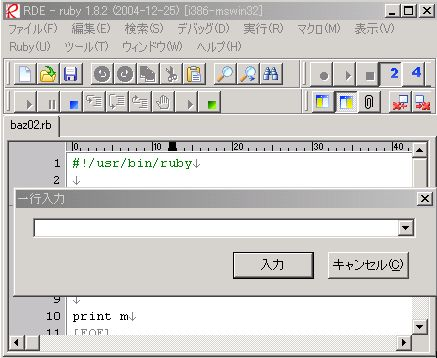
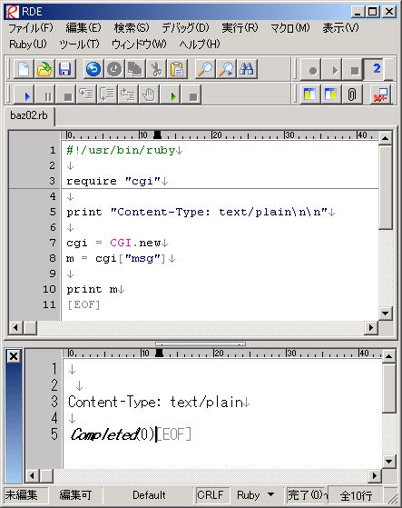
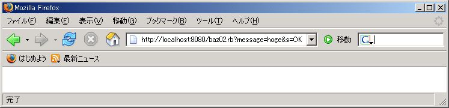

Ruby ビギナーのための CGI 入門 【第 3 回】 ページ 3
このページの目次
CGIプログラムのエラーの修正
前のページでは、一般的な Ruby プログラムでよく目にする エラーを紹介しました。 これからいよいよ CGI プログラムのエラーを見ていきましょう。
このページでは、皆さんにエラーを見つけてもらいます。 いきなり回答を見ずに、まずは自分でエラーを修正してみて下さい。
その 1
最初は非常に短い CGI プログラムからです。 連載の第 1 回はこんな感じの CGI プログラムから スタートしましたね。 では、どこに間違いがあるのかよーく探してみて下さい。
baz01.rb
#!/usr/bin/ruby
print "Content-Type: text/html\n"
priny "hogehoge"
このプログラムは C:\rubima014-cgi にあります。
エラーがあると言っても最初はプログラムを眺めても分からないと思います。
サーバーを起動して、ブラウザで http://localhost:8080/baz01.rb にアクセスして、
実行してみましょう。
実行結果は下のようになります。

エラー探し
ブラウザには「C:/rubima014-cgi/baz01.rb にエラーがありますよ」という意味の メッセージが表示されています。 でも、このメッセージだけではどこにエラーがあるのか分かりません。
このように Internal Server Error というメッセージが表示された時は、 他の詳細なエラーメッセージを探したり、 プログラムを読んだりしてエラーの原因を探す必要があります。
おそらく皆さんの多くは server.rb 経由で CGI プログラムを実行させているでしょうから、 それを例にとって詳細なエラーメッセージについて説明します。 server.rb を使った場合、詳細なエラーメッセージは server.rb を 実行した際に現れる黒いコマンドプロンプトに表示されます。 コマンドプロンプトには CGI プログラムを実行した時刻や CGI プログラムを実行した時のエラーメッセージ等が表示されています。 下に baz01.rb を実行した時に server.rb が表示するエラーメッセージを抜粋します。
[2006-02-06 01:17:20] ERROR CGIHandler: C:/rubima014-cgi/baz01.rb:
C:/rubima014-cgi/baz01.rb:4: undefined method `priny' for main:Object (NoMethodError)
[2006-02-06 01:17:20] ERROR CGIHandler: C:/rubima014-cgi/baz01.rb exit with 1
[2006-02-06 01:17:20] ERROR Premature end of script headers: C:/rubima014-cgi/baz01.rb
INSPIRON - - [06/Feb/2006:01:17:19 東京 (標準時)] "GET /baz01.rb HTTP/1.1" 500 338
http://localhost:8080/ -> /baz01.rbこのメッセージで重要なポイントは最初の 2 行です。 ここに baz01.rb を実行した時の Ruby のエラーメッセージが書かれています。
C:/rubima014-cgi/baz01.rb: C:/rubima014-cgi/baz01.rb:4: undefined method `priny' for main:Object (NoMethodError)このメッセージは前のページのエラーの紹介に出てきましたね。 メソッド名が間違っている時のエラーです。 エラーメッセージには 4 行目が間違っていると書かれています。 よく見ると baz01.rb の 4 行目 で priny を使っています。 これがエラーの原因です。
詳細なエラーメッセージはいつでも手に入るわけではありません。 例えば、レンタルサーバーで CGI プログラムを試している時には 詳細なエラーメッセージを見れないこともあります。 こうした場合、別の方法でエラーの原因を探す必要があります。
では、どうしたら良いのでしょうか?
今回のエラーは Ruby のエラーメッセージから分かるように
CGI プログラムに固有のエラーではなく、Ruby プログラムとしてのエラーです。
ですから、Ruby プログラムとして実行すれば
このエラーを見つけることが可能です。
下に RDE で baz01.rb を実行した場合のスクリーンショットを載せます。
CGI で実行した場合と同じエラーが出ていることが分かります。
このような方法でもエラーの原因を見つけることが出来ます。

このエラーを修正するには priny を print に変えます。 これで Ruby プログラムとして実行可能になります。 修正が終わったら、もう一度 CGI プログラムとして実行してみましょう。 http://localhost:8080/baz01.rb にアクセスしてみて下さい。
…ブラウザには修正前と同じメッセ―ジが表示されてしまいますね。 先程のエラーが修正出来ていないのでしょうか ? 違います。少なくとも RDE で実行出来ているのですから、 Ruby プログラムとしてのエラーは修正されています。
もう 1 つのエラー
実は baz01.rb にはもう 1 つエラーがあります。 コマンドプロンプトに表示されているメッセージをもう一度見直してみましょう。
[2006-02-06 01:51:32] ERROR Premature end of script headers:
C:/rubima014-cgi/baz01.rb
INSPIRON - - [06/Feb/2006:01:51:30 東京 (標準時)] "GET /baz01.rb HTTP/1.1" 500 338
http://localhost:8080/ -> /baz01.rb確かに修正前と違うエラーメッセージになっています。 今回は何が原因でエラーになっているのでしょうか？ このエラーは CGI プログラムを作りだして間もない頃に良く見ると思います。 予行演習と思ってエラーの原因を考えてみて下さい。
原因を考えてみて下さいでは、答えを述べましょう。 元のプログラムの 3 行目は
print "Content-Type: text/plain\n"となっていますね。 この行は連載第 1 回で紹介した CGI プログラムのおまじないです。 この行がエラーの原因です。 本来は下のようにしなければなりません。
print "Content-Type: text/plain\n\n"\n が抜けているだけなのですが、 これでもエラーになってしまいます。 修正は \n を文字列に加えるだけです。 修正した CGI プログラムが http://localhost:8080/baz01-ok.rb にあります。 アクセスしてみて下さい。
修正後の CGI プログラムを下に載せます。 自分が修正した部分と同じようになっていますか? 修正部分はごく僅かですが、 そうした僅かな違いがエラーを引き起こしてしまいます。
#!/usr/bin/ruby
print "Content-Type: text/html\n\n"
print "hogehoge"
その 2
2 つ目の CGI プログラムを見ていきましょう。 このプログラムは前回の「山彦もどき」のように フォームのテキストフィールドに入力されたデータを そのまま表示させる CGI プログラムです。
baz02.rb
#!/usr/bin/ruby
require "cgi "
print "Content-Type: text/html\n\n"
cgi = CGI.new
m = cgi["msg"]
print m
http://localhost:8080/baz02.html にフォームがあります。

フォームに入力してOKボタンを押して、baz02.rb を実行してみましょう。 baz02.rb が実行されると、baz01.rb と同じエラーがブラウザに表示されます。 前回同様、これでは何がエラーの原因か分かりません。 それでもとりえあずプログラムを読んだりして 色々とエラーの原因を探してみて下さい。
Ruby プログラムとしてのエラー
まずはコマンドプロンプトに表示されている server.rb のメッセージを見てみましょう。 エラーメッセージからは、 baz02.rb の 3 行目でエラーが出ていることが分かります。
[2006-02-06 02:47:53] ERROR CGIHandler: C:/rubima014-cgi/baz02.rb:
C:/rubima014-cgi/baz02.rb:3:in `require': No such file to load -- cgi (LoadError)
from C:/rubima014-cgi/baz02.rb:3
[2006-02-06 02:47:53] ERROR CGIHandler: C:/rubima014-cgi/baz02.rb exit with 1
[2006-02-06 02:47:53] ERROR Premature end of script headers: C:/rubima014-cgi/baz02.rb
INSPIRON - - [06/Feb/2006:02:47:52 東京 (標準時)] "GET /baz02.rb?message=hoge&s=OK HTTP/1.1" 500 338
http://localhost:8080/baz02.html -> /baz02.rb?message=hoge&s=OK3 行目は CGI クラスの準備を行っている部分です。 プログラムを良く見ると、 3 行目の require の後ろが “cgi “ (空白が余分です) になっています。 ここは “cgi” でなければなりません。 修正する前に RDE で実行してみて下さい。 3 行目でエラーが出ているはずです。
“cgi “ の部分を修正したら、一度 RDE で実行してみましょう。
RDE で実行すると、プログラムが実行の途中で止まり、
実行結果を表示する部分が灰色のままになってしまいます。

CGI クラスのオブジェクトを使った CGI プログラムを実行すると、 CGI オブジェクトはフォームの値が欲しくて プログラムの実行を途中で止めてしまいます。 この状態をフォームの値の入力待ちと言います。
これは CGI クラスの特徴の 1 つです。 RDE を経由して CGI オブジェクトにフォームの値を入力すればプログラムが 再開されます。
フォームの値を入力するには RDE のメニューの デバッグ → 一行入力 を選びます。 こうすると一行入力と書かれたダイアログが出てくるので、 ここにフォームの値を入力します。 
今は何も入力をしないで CGI プログラムを再開させましょう。 何も打たずに「入力」のボタンを押します。 次に RDE のメニューの 編集 → EOFを入力 を選びます。 これで Ruby プログラムが再開されます。 下にその結果を載せます。 
RDE で実行できたらもう一度 http://localhost:8080/baz02.html を表示させてフォームに入力し、CGI プログラムとして実行してみましょう。 おそらく下のように何も表示されないと思います。
山彦もどき なので入力した値が表示されるはずなのですが、 どうしてこうなるのでしょうか？ 
実は baz02.rb にはエラーがもう一つあります。 そのエラーを見つける方法としてこれから下の 2 種類の方法を紹介します。 でも、まずは皆さん自身で色々と考えてみて下さい。
- 前ページで紹介したプリントデバッグ
- server.rb のメッセージからデバッグ
プリントデバッグ
2 ページ で紹介した プリントデバッグを使って原因を調べてみましょう。
プリントデバッグではプログラムのどこで 何を表示させるかというのが一つのポイントになります。 プログラムの怪しそうな場所で、怪しそうな変数を決めて、 p 等でオブジェクトを表示させてプリントデバッグします。
今回は変数 m と cgi.params の内容を表示させることにします。 変数 m は最後に山彦もどきとして表示させるデータです。 変数 m の値が期待している値と違えば、 そこまでのどこかがおかしい、ということが分かります。 もう一つの cgi.params は CGI オブジェクトに params というメソッドを 実行してもらった時の返り値です (少し難しいかもしれませんが、今後はこのような表現にも馴れていって下さい)。 CGI オブジェクト の params メソッドの返り値は フォームに入力された値の一覧です。 もし、フォームの値がうまく入力されていなければ cgi.params の値がおかしいはずです。
では、実際にプリントデバッグ用のプログラムを見てみましょう。 9, 11 行目がプリントデバッグ用になります。 9, 11 行目はそれぞれ cgi.params と変数 m が使えるようになった直後ですから、 ここにプリントデバッグ用の行を入れることが妥当です。
baz02-print.rb
#!/usr/bin/ruby
require "cgi"
print "Content-Type: text/html\n\n"
cgi = CGI.new
p cgi.params
m = cgi["msg"]
p m
print m
実際に baz02-print.rb を RDE から実行してみます。 9, 11 行目のようなプリントデバッグを含んだ CGI プログラムを そのまま server.rb などから CGI で実行すると、 プリントデバッグの実行結果がブラウザに表示されてしまいます。 これでは見にくかったり、「premature end of script headers」という エラーになることが多いので、 最初は Ruby プログラムとして実行することをお勧めします。
RDE から実行する時はフォームの値を入力してあげなくてはいけません。
そのためには下図のように baz02-print.rb がフォームの入力待ちになった時に
フォームのデータを入れてあげます。
フォームのデータは前号で説明した URL の「?」の後ろの部分です。

一行入力に対し図のように message=hogehoge と入力し、
その後でメニューから 編集 -> EOF を入力 を選択します。
これで baz02-print.rb が実行されます。

実行結果は
message=hogehoge
Content-Type: text/plain
{"message"=>["hogehoge"]}
""となっていますね。最後の 2 行以外はプリントデバッグを実行するまでの 出力結果なので、無視します。
出力結果の 5 行目が cgi.params の返り値を p で表示させた結果です。 これが今回入力したフォームのデータです。 表示された結果から cgi.params の返り値が Hash ということが分かりますね。 返り値の Hash の表示のされ方が難しいと思いますが、 この Hash には message という name 属性を持つフォームの値が含まれています。 6 行目は変数 m のデータです。空文字列ですね。
ここから分かるようにフォームのデータはきちんと処理されていますが、 変数 m の値は変ですね。 そのつもりで baz02.rb を見直すと、間違っているところがありました。 8 行目の
m = cgi["msg"]の部分です。 この行ではフォームの値のうち msg の組の値を使おうとしています。 しかし、cgi.params の返り値には msg の組がありません
実際、http://localhost:8080/baz02.html のフォームに何かデータを入力してみて下さい。 baz02.html 経由で baz02.rb が実行された時、 http://localhost:8080/baz02.rb?message=dddd&s=OK のように message はあっても msg はないはずです。
フォームの値に指定された組が無い時、 CGI オブジェクトの [] メソッドは空文字列を返します。 そのため変数 m は空文字列を指すことになります。 結果、ブラウザには何も表示されないわけです。
最後に修正ですね。これも簡単です。 baz02.rb の msg という文字列を message に変えれば期待通りに動くようになります。
servrer.rb のメッセージからのデバッグ
プリントでバッグ以外でもサーバーが出すメッセージから エラーの原因を見つけることが可能です。 http://localhost:8080/baz02.html のフォームに hoge と入力して、 CGI プログラムを実行させた時の コマンドプロンプトのメッセージを見てみましょう。
INSPIRON - - [11/Feb/2006:00:19:29 東京 (標準時)] "GET /baz02.rb?message=hoge&s=OK HTTP/1.1" 200 0
http://localhost:8080/baz02.html -> /baz02.rb?message=hoge&s=OKよく見ると、baz02.rb?message=hoge&s=OK となっていますね。 ブラウザの URL にも同じ値があります。 これは入力したフォームの値が
- message と hoge
- s と OK
の組み合わせになっていることを示しています。 前者 (message の組) は入力を行うテキストフィールド、 後者 (s の組) はサブミットボタン(送信ボタン) に対応します。 山彦もどきで表示させたいのは message の値です。
既に述べたように cgi[“msg”] となっていると、 msg の組の値を得ることになりますが、 実際にはそのような組が無いため変数 m が空文字列になってしまいます。
修正済みのプログラム
今回のプログラムでも、エラーの原因は見つけにくかったと思いますが、 原因さえ分かれば修正は簡単でしたね。 修正後のプログラムを下に載せます。 自分で修正出来たでしょうか？
baz02-ok.rb
#!/usr/bin/ruby
require "cgi"
print "Content-Type: text/html\n\n"
cgi = CGI.new
m = cgi["message"]
print m
http://localhost:8080/baz02-ok.rb に修正済みの CGI プログラムがあるので、 baz02.html の form タグの action 属性を変更してから、 試してみて下さい。
実は修正方法がもう一つあります。 baz02.rb の msg はそのままにしておいて、 baz02.html の
<input name="message" value=""> <br>という行を
<input name="msg" value=""> <br>に変更します。フォームデータに message を使うのではなく、 msg を使うわけです。こうすればプログラム側が msg でも きちんと動作します。
その 3
ここではアクセスログを取る CGI プログラムを作ってみます。 アクセスログというのはページ (あるいはサーバー) にアクセスがある時、 アクセスがあったことを記録したものです。
普通アクセスログには色々な情報を記録するのですが、 今回は基本的な情報だけを記録するプログラムを作ります。 そのプログラムの作製中にエラーのあるプログラムが出てくるので、 皆さんでそれを修正してみて下さい。
アクセスログに記録する内容
まず、アクセスログに記録する内容について考えてみます。
収集する情報は下記の 3 つにしぼります。
- アクセスされた時刻
- アクセス元のアドレス
- アクセス元の計算機の名前
アクセス元のアドレスは IP アドレスという番号になります。 IP アドレスというのはネットワークにつながっている各計算機に割り振られていて、 基本的に同じ IP アドレスの計算機はインターネット上にありません。 そのため IP アドレスを記録すればどの計算機からアクセスがあったのか分かります (本当はそれほど簡単ではないのですが、 この部分は本筋ではないのでそういう事にしておきます)。
アクセス元の計算機の名前というのは URL によく使われる 「.」でつながった部分です。 http://www.ruby-lang.org/ なら www.ruby-lang.org の部分が名前になります。 各計算機にはこうした名前が付けられていて 基本的に IP アドレスと対応するようになっています。 他にも、http://localhost:8080/ の localhost も 計算機の名前です。
アクセス元のアドレスと計算機の名前は CGI クラスのオブジェクトに頼むと 簡単に手に入るようになっています。 具体的には CGI オブジェクトに
- remote_addr
- remote_host
というメソッドを実行してもらうと上記の情報が得られます。 これらのメソッドはリファレンスマニュアルの CGI に関連する環境変数の値を取得する という項目で説明されていますので、余裕のある人は参照してみて下さい。
アクセスされた時刻にはアクセスログの CGI プログラムが 実行された時の時刻を使います。 Time というクラスのオブジェクトを作ると、 その Time オブジェクトにはオブジェクトが作られた時刻が記録されます。 それを利用してアクセスされた時刻のデータを取得します。
ログに記録する内容を表示させる
まずはログを取る 3 つを表示させてみます。 CGI プログラムのエラー探しは次で行います。
では、実際に上の 3 つの情報を表示させてみましょう。 http://localhost:8080/show.rb にアクセスしてみて下さい。 show.rb は上の 3 つの情報を表示させる CGI プログラムです。 難しいところは無いと思います。
show.rb
#!/usr/bin/ruby
require "cgi"
c = CGI.new
print "Content-Type: text/html\n\n"
print Time.new
print ": "
print c.remote_addr
print ", "
print c.remote_host
print "\n"
9 行目で Time.new で Time オブジェクトが作られています。 この行で show.rb が実行された時刻が表示されるわけです。 11, 14行目では CGI オブジェクトの remote_addr, remote_host の 2 つのメソッドが使われています。
アクセスログの保存
次に実際にアクセスログを保存する CGI プログラムを作ります。 必要なデータを取得する方法は分かりましたから、 後はそのデータを記録するだけです。 アクセスログを記録する方法は 前回の掲示板データを保存した時と基本的に同じです。
データを保存する時に 1 回のアクセスの記録が 1 行になるようにします。 つまり、3 回分のアクセスログは 3 行に、 100 回分のアクセスログは 100 行にします。 また、保存先のファイルは プログラムと同じフォルダーの access.txt にします。 では、CGI プログラム全体を見てみましょう。
access.rb
#!/usr/bin/ruby
require "cgi"
c = CGI.new
f = open("access.txt", "w")
f.write(Time.new)
f.write(": ")
f.write(c.remote_addr)
f.write(", ")
f.write(c.remote_host)
f.write("\n")
print "Content-Type: text/html\n\n"
print "OK"
実はこのプログラムにはエラーがあります。
エラーを見つけるためにとりあえず実行してみましょう。
http://localhost:8080/access.rb にアクセスしてみて下さい。

OK と表示されたので、ちょっと見ただけでは うまく実行出来ているように見えますね。 でも、エラーがあります。
次に access.rb をざっと眺めてみましょう。
3〜5 行は CGI オブジェクトを作る部分です。
ここは問題無さそうです。
7〜14 行は実際にファイルに保存している部分です。
7 行目で access.txt を書き込み用に開いて、
そこに 3 つの情報を書き込んでいます。
14 行目で改行を書き加えて 1 回分のアクセスログが
1 行になるようにしています。
15〜16 行はとりあえず何かを表示させているだけで、
アクセスログとしての意味はありません。
こうしてみると、何もエラーは無いように思えます。
書き込み先の access.txt にもアクセス記録が残っています。

では、何度か http://localhost:8080/access.rb にアクセスしてから、 access.txt を RDE で読んでみて下さい。 アクセスした回数分だけ行数が増えているはずですが、 ファイルには 1 行しか記録がありませんね。 どこが悪いのでしょう？
原因を考えてみて下さい。間違っているのは open の引数です。 open の引数の 2 つ目が “w” になっていますね。 これがエラーの原因でした。
前回 open の引数に “w” を使うと、元のデータが消えると注意しました。 今回のようにアクセスのたびにデータを追加したい時は “a” を使わなければなりません。 “w” を使うと、アクセスのたびに下のように処理されてしまいます。
- access.txt を 書き込み用に開く
- それまでのデータが消える
- まっさらな access.txt に 1 回分のアクセス記録が保存される
アクセスの度にこれが繰り返されるので、 何回アクセスしても access.txt は 1 行のままです。
一方、引数を “a” で開いた場合、下のように処理されます。
- access.txt を 追加書き込み用に開く
- それまでのデータの末尾に 1 回分のアクセス記録が保存される
これで追加書き込みがされて アクセスのたびに行数が増えていきます。
open の引数以外にもう 1 つ注意があります。 必ずしもエラーではありませんが、 access.rb ではファイルを閉じていません。 本来は閉じるべきなので、これも追加しておきます。 修正後の access.rb は下のようになります。
access-ok.rb
#!/usr/bin/ruby
require "cgi"
c = CGI.new
f = open("access.txt", "a")
f.write(Time.new)
f.write(": ")
f.write(c.remote_addr)
f.write(", ")
f.write(c.remote_host)
f.write("\n")
f.close
print "Content-Type: text/html\n\n"
print "OK"
まとめ
簡単に 1-3 のプログラムのエラーをまとめてみましょう。
まず、その 1 では Ruby プログラムとしてのエラーを含む CGI プログラムを修正しました。 Ruby プログラムとして実行することで 簡単にエラーを見つけることが出来ましたね。
その 2 のプログラムでは Ruby プログラムとしてのエラーと CGI プログラムとしてのエラーの両方がありました。 CGI プログラムとしてのエラーはなかなか見つけにくいので、 今回はプリントデバッグを利用してエラーの原因を探しました。
その 3 は open の引数の間違いでしたね。 この間違いは Ruby, CGI プログラムのいずれのエラーでもありません。 欲しい機能と実際のプログラムの内容とが合致していないことがエラーの原因でした。 その 1, 2 に比べると、原因を見つけるのが難しかったのではないでしょうか。
おわりに
この号では Ruby プログラムや CGI プログラムのデバッグ方法を学びました。 今後皆さんがプログラムを作る時にも 様々なエラーと付き合っていかなければなりません。 最初はエラーのある場所を見つけるのも苦労すると思いますが、 だんだんとエラーとの付き合い方も分かるようになってきます。
次号は掲示板作りに戻りたいと思います。 まずは 12 号の掲示板の修正から始める予定です。
参考文献 というか ほとんどリンク
オブジェクト・メソッド・クラス
- Ruby リファレンスマニュアル - オブジェクト リファレンスマニュアルのオブジェクトの説明のページです。
- Ruby 実習マニュアル Ruby のオブジェクトの記述があります。
- −オブジェクト指向再入門 − Smalltalk というプログラム言語でのオブジェクトの考え方が説明されています。
- Object-Oriented Programming Concepts Java というプログラム言語でのオブジェクトの考え方が説明されています。
そのほか参考にした文献
- ‘自由自在 Squeak プログラミング’
- http://d.hatena.ne.jp/sumim/20040525/p1
- http://kmaebashi.com/programmer/object/index.html
- http://www.spice-of-life.net/wiki/index.cgi/d/?wikiname=LearnOOPWithSqueak
エラー
- http://www.harukaze.net/~mishima/perl/cgi-debug-env/deb-tech.html
- http://www.phys.cs.is.nagoya-u.ac.jp/~watanabe/tips/debug.html
- http://phpspot.org/blog/archives/2006/01/iehttpiehttphea.html
筆者について というか 猫について
朝起きると、私が寝ている布団の上に猫が乗っていたりします。 大きいほうは 5kg もあるので、結構寝苦しいです。 普段、からかって遊んでいる逆襲なのでしょうか・・・。